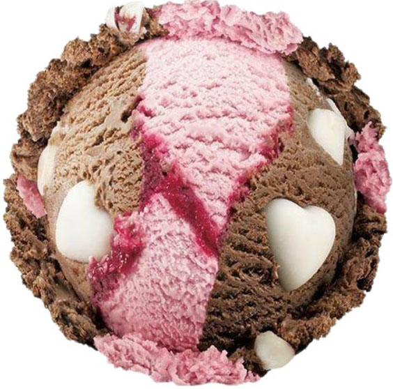
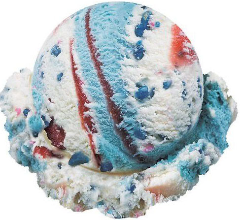
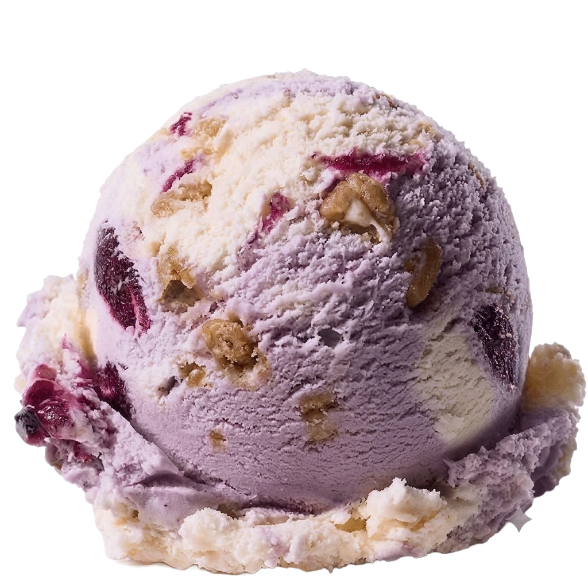
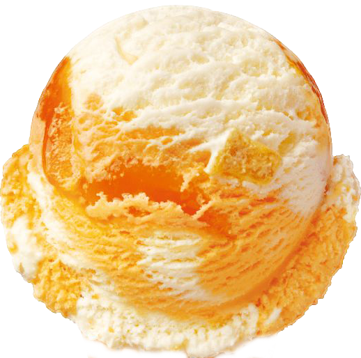
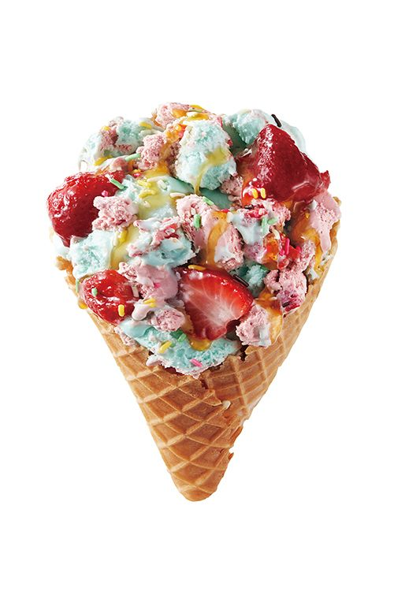
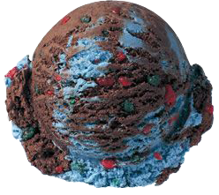
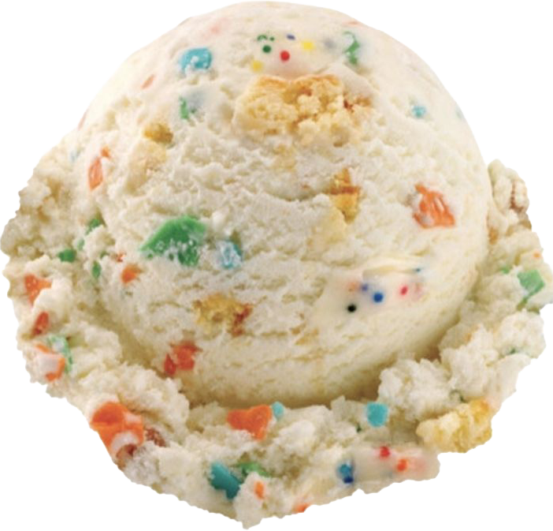
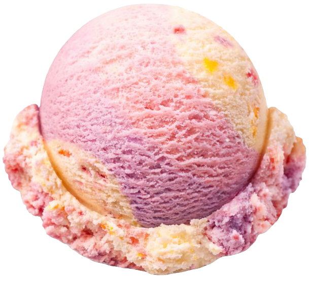
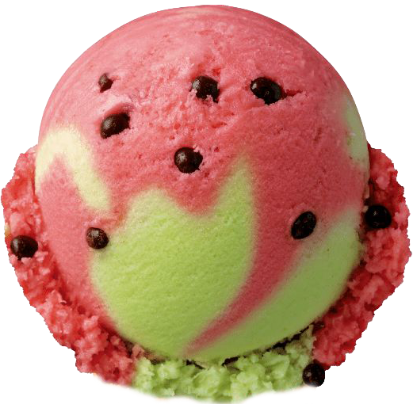

Teddy's Love
Full of love in teddy's heart!
Teddy's Love, a scoop so sweet and comforting it makes your heart melt.. this flavour brings together a cozy, affectionate mix of textures that you will "paws-itively" adore.
A velvety milk chocolate ice cream base, paired with a soft swirl of strawberry cream finally loaded with sweet, crunchy white chocolate hearts...how romantic!

The American Dream
Land of the free, home of the scoop!
Are you ready to exercise your right to life, liberty, and the pursuit of deliciousness? Say hello to The American Dream, a flavour so patriotic it practically sings the national anthem, even a scoop serves up pure red, white, and blue glory in every single bite.
A rich, classic vanilla ice cream base ribboned with a sweet, tart strawberry jam swirl.. blasted with bold blueberry bursts and festive blue crunchies...such a freeing taste.

Midnight Moonstone
Ready to unearth a hidden gem of a dessert?
A flavour so dazzling and enchanting that it will knock you into another universe. We have channeled the mystical, dreamy hues of a rare crystal to fly you up to cloud 9!
A velvety lavender-tinted sweet blueberry ice cream base with swirls of bright, refreshing white Greek yogurt ice cream..as the deep bursts of juicy blueberry jam ribbons pair up with roasted nuts..how nice..

Mango Masterclass
Class is in session, and the topic is pure tropical perfection!
A flavour dedicated to showing everyone exactly how a fruit classic should be done, this pint keeps things beautifully simple while delivering a high-definition blast of pure tropical bliss.
An ultra-smooth and creamy mango ice cream base, swirled with a thick, intensely sweet, and tangy mango jam ribbon.. packed with real, juicy chunks of sun-ripened mango.

Sweetheart Sunset
Fall head over heels for a tropical romance!
By bypassing standards to bring you a fresh, vibrant treat that tastes like a sunny vacation dipped in rich chocolate.
A creamy sweet milk base as the horizon, the sun going out as zesty ribbons of golden mango.. tart bursts of rich cherry red, love expressed through decadent, velvety chocolate hearts..now I get why people love sunsets.

Matcha Mystic
Elevate your dessert ritual to a state of pure bliss..
Forget everything you know about basic green tea scoops. Matcha Mystic completely reimagines the traditional flavour, effortlessly proving some combinations are truly a matcha made in heaven.
A silky, ultra-luxurious sweet cream ice cream base that melts with the bold, premium stone-ground matcha ice cream for that authentic, deeply comforting tea flavour, lead by an intensely rich, dark green matcha glaze ribbons swirled throughout for a sweet pop.

Glitchy Crunch
Level up your dessert game with a high-score flavour combo!
Ready to break the simulation? Glitch Core Crunch is a chaotic, retro-cool mashup designed for the ultimate flavour quest. By hacking together an icy refresh with deep, chocolate codes and a blast of colourful candy bits.
An electric blue mint ice cream base that delivers a sub-zero freeze, as rich chocolate fudge swirls coat your tastebuds in pure indulgence while crunchy, candy-coated gummy gems high-octane crunch explode vigorously!

Cloud Nine Confetti
Step into a dreamland of pure, unapologetic sweetness!
This flavour takes the over-the-top nostalgia of a childhood birthday and wraps it in a mellow creaminess. It is a whimsical, sugar-rush paradise that somehow feels proves you can absolutely have your cake and eat it too.
A super-thick, almost-doughy birthday cake batter ice cream base with swirls of a rich, velvety white chocolate fudge ribbon scattered with bright, crunchy rainbow sprinkles..when is my birthday coming up again?

Melt-Away Melody
A fleeting taste of pure, fun relaxation.
Melt-Away Melody is a beautifully soft, ultra-refreshing scoop designed to instantly dissolve into pure bliss the second it hits your tongue. Its delicate and effortless sweetness will make you want to slow down and enjoy it before it disappears.
A light, sweet cream base that acts as the perfect smooth canvas, where the gentle ribbons of juicy, vine-ripened strawberry cream are infused with a burst of wild berry puree.. flecked with subtle hints of tropical peach and citrus zest for that ultimate refreshing finish.

Slice of Summer
Step into a dreamland of pure, unapologetic sweetness!
Nothing screams sunshine and warm afternoons quite like a crisp, juicy wedge of fresh fruit. It skips the heavy dairy and chocolate to give you a pure, refreshing burst of absolute hydration. It is crisp, and one-in-a-melon.
An icy watermelon sorbet base that melts instantly, swirled with a subtle, tangy green apple and lime sherbet for a lively flavour contrast. We have also embedded chewy, tart blackberry candy drops to give you that classic look with a completely fruity punch.